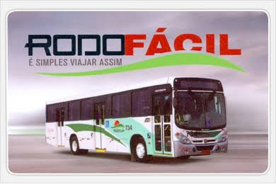

É um cartão magnético pré-pago que permite ao usuário a comodidade de ter sempre em mãos sua passagem paga. O serviço está disponível para pessoas físicas, grandes e pequenas empresas. Entre alguns dos benefícios podemos citar a satisfação de diversas empresas, que passam a ter maior controle sobre o benefício ofertado aos seus funcionários e ainda o fato de que os créditos não expiram de um mês para outro. Ou seja, se não for utilizado, o crédito permanece no cartão. A compra de créditos do Rodofácil pode ser feita diretamente com a Rodotur ou pela internet. Para maiores informações entre em contato com nossa empresa e solicite uma visita e apresentação da proposta.
